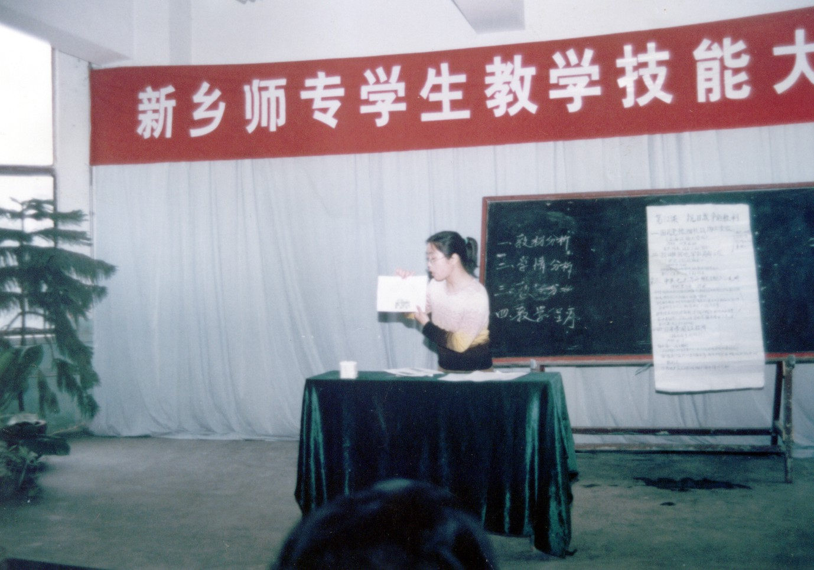
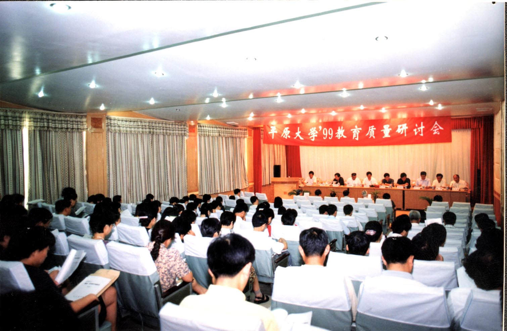
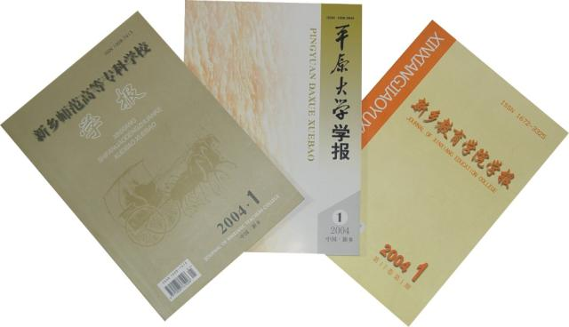

搜索
我
的
青
春
我
的
校
园
1945年5月4日，伴随着新乡解放，5月5日接管了“新乡县立临时联合中学”，7月更名为“太行公立新乡师范学校”，同时建立中共太行公立新乡师范学校党支部，刘采石同志任支部书记，同年开始招生。
1949年12月，著名老教育家、清末秀才，后任河南省教育厅厅长的高镇五先生应平原省省长晃哲甫之邀，出任学校校长。
1950年校址由新乡县东关迁移到孟营北地。1952年平原省建制撤销，学校更名为河南省新乡师范学校。 
1956年开始举办初中教师训练班。1958年经上级批准升格为新乡师范专科学校。
1963年9月又恢复新乡师范学校的校名与建制。文化大革命中，学校名称和隶属关系几经变化，1971年更名为新乡地区师范学校。1977年开始招收全国恢复高考后的统招生。
1984年经河南省人民政府批准，恢复新乡师范专科学校校名和建制；1992年经教育部批准，更名为新乡师范高等专科学校。
1980年8月，经新乡地区行署、新乡市革命委员会同意，批准成立新乡师范学院分院，录取当年参加全国高考达到录取线的考生。
1980年12月，新乡市教师进修学院成立，靳立川兼任学校党支部书记、院长。1981年8月，新乡师范学院分院更名为新乡市走读大学。
同年10月，新乡市人民政府将新乡市走读大学与新乡市教师进修学院合并，隶属于新乡市教育局领导，校址设在新乡市南干道一中校门东侧，1981年12月迁至新乡市东郊骆驼湾附近
1983年4月，新建办公楼竣工，学校于5月全部迁至新校园。1984年5月，学校请示新乡市政府同意，将新乡市走读大学更名为新乡大学，同年12月，新乡市委、市政府决定在新乡市走读大学的基础上创办平原大学，隶属于新乡市政府领导，受省教育主管部门指导监督。
新乡市教育学院是新乡市唯一一所成人师范高等专科学校，承担着全市中小学教师继续教育、中小学校长岗位培训等任务。
其前身为新乡地区教育学院，1980年12月经河南省人民政府[1980]223号文件批准正式成立新乡地区教育学院。
1986年7月地市合并后，新乡地区教育学院更名为新乡市教育学院。新乡市教育学院位于新乡市文化街196号。
60年代初系新乡地区教育经费修建的教育行政干校。随着教学经验的积累，教师队伍的不断壮大，学校于1983年开始招收函授班。
跨入21世纪以后，三校领导审时度势，提出了“二次创业”的口号，决定三校联合，晋升本科。为扩大办学规模，改善办学条件，从2002年开始，学校陆续在新乡市“科教园区”（公村、留庄营、乔榭）三个村庄征地，建设新的校园。2003年5月29日，新区建设第一期工程开工，2004年9月29日，开始新区搬迁，2006年完成整体搬迁。